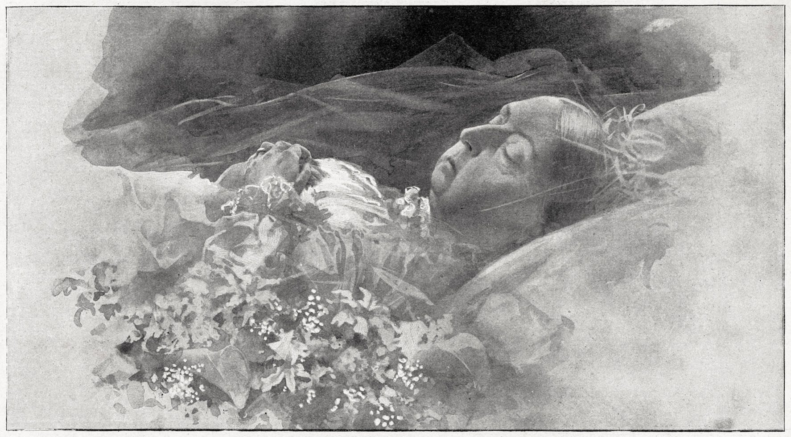

On January 22nd, 1901, Queen Victoria passed away at the age of 81. She went peacefully at the Osborne House on the Isle of Wright, her death signifying the end of an era and the start of a new, her son, King Edward VII, succeeded her.
Queen Victoria's funeral was held on the 2nd of February at St George’s Chapel, Windsor Castle. After two full days of laying-in-state she was placed beside her late husband Prince Albert in Frogmore Royal Mausoleum at Windsor Great Park; a monument Victoria had built for their final resting place. Victoria's reign is the second longest in the British Monarchs history of 63 years, Victoria's great-great granddaughter Elizabeth ll currently holds the title of longest reigning monarch. Queen Victoria was the last monarch from the House of Hanover as her son and successor Edward Vll belonged to Prince Albert’s House of Saxe-Coburg and Gotha.

German, French, Italian, and Latin - speaking Urdu/Hindi later in her life.
Royal Kennels had over 100 dogs at a time!